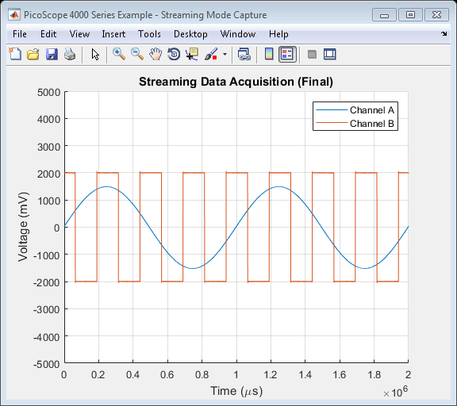

PicoScope 4000 Series Instrument Driver Oscilloscope Streaming Data Capture Example
This is an example of an instrument control session using a device object. The instrument control session comprises all the steps you are likely to take when communicating with your instrument.
These steps are:
- Create a device object
- Connect to the instrument
- Configure properties
- Invoke functions
- Disconnect from the instrument
To run the instrument control session, type the name of the file, PS4000_ID_Streaming_Example, at the MATLAB command prompt.
The file, PS4000_ID_STREAMING_EXAMPLE.M must be on your MATLAB PATH. For additional information on setting your MATLAB PATH, type 'help addpath' at the MATLAB command prompt.
Example: PS4000_ID_Streaming_Example;
Description: Demonstrates how to set properties and call functions in order to capture data in streaming mode from a PicoScope 4000 Series Oscilloscope.
Note: Not all device and group object functions used in this example are compatible with the Test and Measurement Tool.
Copyright: © 2015-2017 Pico Technology Ltd. See LICENSE file for terms.
Contents
- Suggested Input Test Signals
- Clear Command Window and Close any Figures
- Load Configuration Information
- Parameter Definitions
- Device Connection
- Display Unit Information From Shared Library
- Channel Setup
- Trigger Setup
- Set Data Buffers
- Start Streaming and Collect Data
- Stop the Device
- Find the Number of Samples.
- Process Data
- Disconnect Device
Suggested Input Test Signals
This example was published using the following test signals:
- Channel A: 3 Vpp, 1 Hz sine wave
- Channel B: 2 Vpp, 4 Hz square wave
Clear Command Window and Close any Figures
clc;
close all;
Load Configuration Information
PS4000Config;
Parameter Definitions
Define any parameters that might be required throughout the script.
channelA = ps4000Enuminfo.enPS4000Channel.PS4000_CHANNEL_A; channelB = ps4000Enuminfo.enPS4000Channel.PS4000_CHANNEL_B;
Device Connection
% Check if an Instrument session using the device object |ps4000DeviceObj| % is still open, and if so, disconnect if the User chooses 'Yes' when prompted. if (exist('ps4000DeviceObj', 'var') && ps4000DeviceObj.isvalid && strcmp(ps4000DeviceObj.status, 'open')) openDevice = questionDialog(['Device object ps4000DeviceObj has an open connection. ' ... 'Do you wish to close the connection and continue?'], ... 'Device Object Connection Open'); if (openDevice == PicoConstants.TRUE) % Close connection to device disconnect(ps4000DeviceObj); delete(ps4000DeviceObj); else % Exit script if User selects 'No' return; end end % Create device - specify serial number if required % Specify serial number as 2nd argument if required. ps4000DeviceObj = icdevice('picotech_ps4000_generic', ''); % Connect device connect(ps4000DeviceObj);
Copyright © 2014-2017 Pico Technology Ltd. All rights reserved.
PicoScope 4000 Series MATLAB Instrument Driver
Number of units found: 1
Serial number(s): CX038/010
Opening PicoScope 4000 Series device...
Instrument Device Object Using Driver : picotech_ps4000_generic.mdd
Instrument Information
Type: Oscilloscope
Manufacturer: Pico Technology Ltd.
Model: PicoScope 4000 Series
Driver Information
DriverType: MATLAB generic
DriverName: picotech_ps4000_generic.mdd
DriverVersion: 1.1.8
Communication State
Status: open
Setting Device Parameters...
Instrument Device Object Using Driver : picotech_ps4000_generic.mdd
Instrument Information
Type: Oscilloscope
Manufacturer: Pico Technology Ltd.
Model: PicoScope 4000 Series
Driver Information
DriverType: MATLAB generic
DriverName: picotech_ps4000_generic.mdd
DriverVersion: 1.1.8
Communication State
Status: open
Default Channel Setup:-
-----------------------
ChannelA:-
Enabled: True
Coupling: DC
Range: 5V
ChannelB:-
Enabled: True
Coupling: DC
Range: 5V
ChannelC:-
Enabled: True
Coupling: DC
Range: 5V
ChannelD:-
Enabled: True
Coupling: DC
Range: 5V
Turning off trigger...
Instrument Device Object Using Driver : picotech_ps4000_generic.mdd
Instrument Information
Type: Oscilloscope
Manufacturer: Pico Technology Ltd.
Model: PicoScope 4000 Series
Driver Information
DriverType: MATLAB generic
DriverName: picotech_ps4000_generic.mdd
DriverVersion: 1.1.8
Communication State
Status: open
Default Block mode parameters:-
Timebase index : 34
Time Interval: 1650.0 ns
Number of pre-trigger samples: 0
Number of post-trigger samples: 1000000
Total number of samples: 1000000
Default Streaming mode parameters:-
Streaming interval: 1.00e-06 s
Streaming auto stop: 1
Initialisation complete.
Connected to PicoScope 4000 Series device:-
Instrument Model: 4424
Batch/Serial Number: CX038/010
Analogue Channels: 4
Bandwidth: 20 MHz
Buffer memory: 32 MS
Maximum sampling rate: 80 MS/s
Signal Generator Type: None
Display Unit Information From Shared Library
[infoStatus, unitInfo] = invoke(ps4000DeviceObj, 'getUnitInfo');
disp(unitInfo);
'Driver version: 1.5.0.8'
'USB version: 2.0'
'Hardware version: 1'
'Variant: 4424'
'Batch & Serial: CX038/010'
'Cal. Date: 30May13'
'Kernel version: 1.0'
Channel Setup
All channels are enabled by default - switch off all except Channels A and B.
numChannels = get(ps4000DeviceObj, 'channelCount'); % Channel A channelSettings(1).enabled = PicoConstants.TRUE; channelSettings(1).coupling = 1; channelSettings(1).range = ps4000Enuminfo.enPS4000Range.PS4000_2V; channelARangeMv = PicoConstants.SCOPE_INPUT_RANGES(channelSettings(1).range + 1); % Channel B channelSettings(2).enabled = PicoConstants.TRUE; channelSettings(2).coupling = 1; channelSettings(2).range = ps4000Enuminfo.enPS4000Range.PS4000_5V; channelBRangeMv = PicoConstants.SCOPE_INPUT_RANGES(channelSettings(2).range + 1); if (numChannels == PicoConstants.QUAD_SCOPE) % Channel C channelSettings(3).enabled = PicoConstants.FALSE; channelSettings(3).coupling = 1; channelSettings(3).range = ps4000Enuminfo.enPS4000Range.PS4000_2V; % Channel D channelSettings(4).enabled = PicoConstants.FALSE; channelSettings(4).coupling = 1; channelSettings(4).range = ps4000Enuminfo.enPS4000Range.PS4000_2V; end % Keep the status values returned from the driver. for ch = 1:numChannels status.setChannelStatus(ch) = invoke(ps4000DeviceObj, 'ps4000SetChannel', ... (ch - 1), channelSettings(ch).enabled, ... channelSettings(ch).coupling, channelSettings(ch).range); end % Obtain the maximum ADC Count from the driver maxADCCount = double(get(ps4000DeviceObj, 'maxADCValue'));
Trigger Setup
Turn off trigger If a trigger is set and the autoStop property of the Instrument Driver's Streaming group object is set to '1', the device will stop collecting data once the number of post trigger samples have been collected.
% Trigger properties and functions are located in the Instrument % Driver's Trigger group. triggerGroupObj = get(ps4000DeviceObj, 'Trigger'); triggerGroupObj = triggerGroupObj(1); [status.setTriggerOff] = invoke(triggerGroupObj, 'setTriggerOff');
Set Data Buffers
Data buffers for channels A and B - buffers should be set with the driver, and these MUST be passed with application buffers to the wrapper driver in order to ensure data is correctly copied.
overviewBufferSize = 250000; % Size of the buffer to collect data from buffer. segmentIndex = 0; ratioMode = ps4000Enuminfo.enRatioMode.RATIO_MODE_NONE; % Buffers to be passed to the driver pDriverBufferChA = libpointer('int16Ptr', zeros(overviewBufferSize, 1)); pDriverBufferChB = libpointer('int16Ptr', zeros(overviewBufferSize, 1)); status.setDataBufferChA = invoke(ps4000DeviceObj, 'ps4000SetDataBufferWithMode', ... channelA, pDriverBufferChA, overviewBufferSize, segmentIndex, ratioMode); status.setDataBufferChB = invoke(ps4000DeviceObj, 'ps4000SetDataBufferWithMode', ... channelB, pDriverBufferChB, overviewBufferSize, segmentIndex, ratioMode); % Application Buffers - these are for copying from the driver into temporarily. pAppBufferChA = libpointer('int16Ptr', zeros(overviewBufferSize, 1)); pAppBufferChB = libpointer('int16Ptr', zeros(overviewBufferSize, 1)); % Streaming properties and functions are located in the Instrument % Driver's Streaming group. streamingGroupObj = get(ps4000DeviceObj, 'Streaming'); streamingGroupObj = streamingGroupObj(1); % Register application buffer and driver buffers (with the wrapper). status.setAppAndDriverBuffersA = invoke(streamingGroupObj, 'setAppAndDriverBuffers', channelA, ... pAppBufferChA, pDriverBufferChA, overviewBufferSize); status.setAppAndDriverBuffersB = invoke(streamingGroupObj, 'setAppAndDriverBuffers', channelB, ... pAppBufferChB, pDriverBufferChB, overviewBufferSize);
Start Streaming and Collect Data
Use default value for streaming interval which is 1e-6 for 1 MS/s Collect data for 1 second with auto stop - maximum array size will depend on the PC's resources - type memory at the MATLAB command prompt for further information.
% To change the sample interval e.g 5 us for 200 kS/s. The call to % |ps4000RunStreaming()| will output the actual sampling interval used by the % driver. %set(streamingGroupObj, 'streamingInterval', 5e-6); % For 10 MS/s, specify 100 ns %set(streamingGroupObj, 'streamingInterval', 100e-9); % Set the number of pre- and post-trigger samples % If no trigger is set the library will still store the % |numPreTriggerSamples| + |numPostTriggerSamples|. set(ps4000DeviceObj, 'numPreTriggerSamples', 0); set(ps4000DeviceObj, 'numPostTriggerSamples', 2000000); % autoStop parameter can be set to false (0) %set(streamingGroupObj, 'autoStop', PicoConstants.FALSE); % Set other streaming parameters downSampleRatio = 1; % Defined buffers to store data collected from the channels. If capturing % data without using the autoStop flag, or if using a trigger with the % autoStop flag, allocate sufficient space (1.5 times the sum of the number of % pre-trigger and post-trigger samples is shown below) to allow for % additional pre-trigger data. Pre-allocating the array is more efficient % than using <matlab:doc('vertcat') |vertcat|> to combine data. maxSamples = get(ps4000DeviceObj, 'numPreTriggerSamples') + ... get(ps4000DeviceObj, 'numPostTriggerSamples'); % Take into account the downSampleRatioMode - required if collecting data % without a trigger and using the autoStop flag. % finalBufferLength = round(1.5 * maxSamples / downSampleRatio); pBufferChAFinal = libpointer('int16Ptr', zeros(maxSamples, 1, 'int16')); pBufferChBFinal = libpointer('int16Ptr', zeros(maxSamples, 1, 'int16')); % Prompt User to indicate if they wish to plot live streaming data. plotLiveData = questionDialog('Plot live streaming data?', 'Streaming Data Plot'); if (plotLiveData == PicoConstants.TRUE) disp('Live streaming data collection with second plot on completion.'); else disp('Streaming data plot on completion.'); end [status.runStreaming, actualSampleInterval, sampleIntervalTimeUnitsStr] = ... invoke(streamingGroupObj, 'ps4000RunStreaming', downSampleRatio, overviewBufferSize); disp('Streaming data...'); fprintf('Click the STOP button to stop capture or wait for auto stop if enabled.\n\n') % Variables to be used when collecting the data: hasAutoStopped = PicoConstants.FALSE; newSamples = 0; % Number of new samples returned from the driver. previousTotal = 0; % The previous total number of samples. totalSamples = 0; % Total samples captured by the device. startIndex = 0; % Start index of data in the buffer returned. hasTriggered = 0; % To indicate if trigger has occurred. triggeredAtIndex = 0; % The index in the overall buffer where the trigger occurred. time = zeros(overviewBufferSize / downSampleRatio, 1); % Array to hold time values status.getStreamingLatestValues = PicoStatus.PICO_OK; % OK % Display a 'Stop' button. [stopFig.h, stopFig.h] = stopButton(); flag = 1; % Use flag variable to indicate if stop button has been clicked (0) setappdata(gcf, 'run', flag); % Plot Properties - these are for displaying data as it is collected. if (plotLiveData == PicoConstants.TRUE) % Plot on a single figure figure1 = figure('Name','PicoScope 4000 Series Example - Streaming Mode Capture', ... 'NumberTitle','off'); axes1 = axes('Parent', figure1); % Estimate x-axis limit to try and avoid using too much CPU resources % when drawing - use max voltage range selected if plotting multiple % channels on the same graph. xlim(axes1, [0 (actualSampleInterval * maxSamples)]); yRange = max(channelARangeMv, channelBRangeMv); ylim(axes1,[(-1 * yRange) yRange]); hold(axes1,'on'); grid(axes1, 'on'); title(axes1, 'Live Streaming Data Capture'); if (strcmp(sampleIntervalTimeUnitsStr, 'us')) xLabelStr = 'Time (\mus)'; else xLabelStr = strcat('Time (', sampleIntervalTimeUnitsStr, ')'); xlabel(axes1, xLabelStr); end xlabel(axes1, xLabelStr); ylabel(axes1, 'Voltage (mV)'); end % Get data values as long as autoStop flag is not set (check for STOP button push inside loop) while (hasAutoStopped == PicoConstants.FALSE && status.getStreamingLatestValues == PicoStatus.PICO_OK) ready = PicoConstants.FALSE; while (ready == PicoConstants.FALSE) status.getStreamingLatestValues = invoke(streamingGroupObj, 'getStreamingLatestValues'); ready = invoke(streamingGroupObj, 'isReady'); % Give option to abort from here flag = getappdata(gcf, 'run'); drawnow; if (flag == 0) disp('STOP button clicked - aborting data collection.') break; end drawnow; end % Check for data [newSamples, startIndex] = invoke(streamingGroupObj, 'availableData'); if (newSamples > 0) % Check if the scope has triggered [triggered, triggeredAt] = invoke(streamingGroupObj, 'isTriggerReady'); if (triggered == PicoConstants.TRUE) % Adjust trigger position as MATLAB does not use zero-based % indexing bufferTriggerPosition = triggeredAt + 1; fprintf('Triggered - index in buffer: %d\n', bufferTriggerPosition); hasTriggered = triggered; % Adjust by 1 due to driver using zero indexing triggeredAtIndex = totalSamples + bufferTriggerPosition; end previousTotal = totalSamples; totalSamples = totalSamples + newSamples; % Printing to console can slow down acquisition - use for demonstration fprintf('Collected %d samples, startIndex: %d total: %d.\n', newSamples, startIndex, totalSamples); % Position indices of data in buffer firstValuePosn = startIndex + 1; lastValuePosn = startIndex + newSamples; % Convert data values to millivolts from the application buffers bufferChAmV = adc2mv(pAppBufferChA.Value(firstValuePosn:lastValuePosn), channelARangeMv, maxADCCount); bufferChBmV = adc2mv(pAppBufferChB.Value(firstValuePosn:lastValuePosn), channelBRangeMv, maxADCCount); % Process collected data further if required - this example plots % the data if the User has selected 'Yes' at the prompt. % Copy data into the final buffer(s) pBufferChAFinal.Value(previousTotal + 1:totalSamples) = bufferChAmV; pBufferChBFinal.Value(previousTotal + 1:totalSamples) = bufferChBmV; if (plotLiveData == PicoConstants.TRUE) % Time axis % Multiply by ratio mode as samples get reduced. time = (double(actualSampleInterval) * double(downSampleRatio)) * (previousTotal:(totalSamples - 1)); plot(time, bufferChAmV, time, bufferChBmV); end % Clear variables for use again clear bufferChAMV; clear firstValuePosn; clear lastValuePosn; clear startIndex; clear triggered; clear triggerAt; end % Check if auto stop has occurred hasAutoStopped = invoke(streamingGroupObj, 'autoStopped'); if (hasAutoStopped == PicoConstants.TRUE) disp('AutoStop: TRUE - exiting loop.'); break; end % Check if 'STOP' button pressed flag = getappdata(gcf, 'run'); drawnow; if (flag == 0) disp('STOP button clicked - aborting data collection.') break; end end % Close the STOP button window if (exist('stopFig', 'var')) close('Stop Button'); clear stopFig; end if (plotLiveData == PicoConstants.TRUE) drawnow; % Take hold off the current figure. hold(axes1, 'off'); movegui(figure1, 'west'); end if (hasTriggered == PicoConstants.TRUE) fprintf('Triggered at overall index: %d\n', triggeredAtIndex); end fprintf('\n');
Streaming data plot on completion. ps4000RunStreaming:- Sample interval 1 us Streaming data... Click the STOP button to stop capture or wait for auto stop if enabled. Collected 32509 samples, startIndex: 0 total: 32509. Collected 32512 samples, startIndex: 32509 total: 65021. Collected 16256 samples, startIndex: 65021 total: 81277. Collected 32512 samples, startIndex: 81277 total: 113789. Collected 16256 samples, startIndex: 113789 total: 130045. Collected 16256 samples, startIndex: 130045 total: 146301. Collected 16256 samples, startIndex: 146301 total: 162557. Collected 32512 samples, startIndex: 162557 total: 195069. Collected 16256 samples, startIndex: 195069 total: 211325. Collected 16256 samples, startIndex: 211325 total: 227581. Collected 16256 samples, startIndex: 227581 total: 243837. Collected 6163 samples, startIndex: 243837 total: 250000. Collected 42605 samples, startIndex: 0 total: 292605. Collected 16256 samples, startIndex: 42605 total: 308861. Collected 16256 samples, startIndex: 58861 total: 325117. Collected 16256 samples, startIndex: 75117 total: 341373. Collected 32512 samples, startIndex: 91373 total: 373885. Collected 16256 samples, startIndex: 123885 total: 390141. Collected 16256 samples, startIndex: 140141 total: 406397. Collected 16256 samples, startIndex: 156397 total: 422653. Collected 32512 samples, startIndex: 172653 total: 455165. Collected 16256 samples, startIndex: 205165 total: 471421. Collected 16256 samples, startIndex: 221421 total: 487677. Collected 12323 samples, startIndex: 237677 total: 500000. Collected 20189 samples, startIndex: 0 total: 520189. Collected 32512 samples, startIndex: 20189 total: 552701. Collected 32512 samples, startIndex: 52701 total: 585213. Collected 32512 samples, startIndex: 85213 total: 617725. Collected 16256 samples, startIndex: 117725 total: 633981. Collected 16256 samples, startIndex: 133981 total: 650237. Collected 16256 samples, startIndex: 150237 total: 666493. Collected 32512 samples, startIndex: 166493 total: 699005. Collected 16256 samples, startIndex: 199005 total: 715261. Collected 16256 samples, startIndex: 215261 total: 731517. Collected 16256 samples, startIndex: 231517 total: 747773. Collected 2227 samples, startIndex: 247773 total: 750000. Collected 30285 samples, startIndex: 0 total: 780285. Collected 16256 samples, startIndex: 30285 total: 796541. Collected 32512 samples, startIndex: 46541 total: 829053. Collected 16256 samples, startIndex: 79053 total: 845309. Collected 16256 samples, startIndex: 95309 total: 861565. Collected 16256 samples, startIndex: 111565 total: 877821. Collected 32512 samples, startIndex: 127821 total: 910333. Collected 16256 samples, startIndex: 160333 total: 926589. Collected 16256 samples, startIndex: 176589 total: 942845. Collected 16256 samples, startIndex: 192845 total: 959101. Collected 32512 samples, startIndex: 209101 total: 991613. Collected 8387 samples, startIndex: 241613 total: 1000000. Collected 7869 samples, startIndex: 0 total: 1007869. Collected 16256 samples, startIndex: 7869 total: 1024125. Collected 16256 samples, startIndex: 24125 total: 1040381. Collected 16256 samples, startIndex: 40381 total: 1056637. Collected 32512 samples, startIndex: 56637 total: 1089149. Collected 16256 samples, startIndex: 89149 total: 1105405. Collected 16256 samples, startIndex: 105405 total: 1121661. Collected 16256 samples, startIndex: 121661 total: 1137917. Collected 32512 samples, startIndex: 137917 total: 1170429. Collected 16256 samples, startIndex: 170429 total: 1186685. Collected 16256 samples, startIndex: 186685 total: 1202941. Collected 16256 samples, startIndex: 202941 total: 1219197. Collected 30803 samples, startIndex: 219197 total: 1250000. Collected 17965 samples, startIndex: 0 total: 1267965. Collected 16256 samples, startIndex: 17965 total: 1284221. Collected 16256 samples, startIndex: 34221 total: 1300477. Collected 16256 samples, startIndex: 50477 total: 1316733. Collected 32512 samples, startIndex: 66733 total: 1349245. Collected 16256 samples, startIndex: 99245 total: 1365501. Collected 16256 samples, startIndex: 115501 total: 1381757. Collected 16256 samples, startIndex: 131757 total: 1398013. Collected 32512 samples, startIndex: 148013 total: 1430525. Collected 16256 samples, startIndex: 180525 total: 1446781. Collected 16256 samples, startIndex: 196781 total: 1463037. Collected 16256 samples, startIndex: 213037 total: 1479293. Collected 20707 samples, startIndex: 229293 total: 1500000. Collected 28061 samples, startIndex: 0 total: 1528061. Collected 16256 samples, startIndex: 28061 total: 1544317. Collected 16256 samples, startIndex: 44317 total: 1560573. Collected 16256 samples, startIndex: 60573 total: 1576829. Collected 32512 samples, startIndex: 76829 total: 1609341. Collected 16256 samples, startIndex: 109341 total: 1625597. Collected 16256 samples, startIndex: 125597 total: 1641853. Collected 16256 samples, startIndex: 141853 total: 1658109. Collected 32512 samples, startIndex: 158109 total: 1690621. Collected 16256 samples, startIndex: 190621 total: 1706877. Collected 16256 samples, startIndex: 206877 total: 1723133. Collected 16256 samples, startIndex: 223133 total: 1739389. Collected 10611 samples, startIndex: 239389 total: 1750000. Collected 38157 samples, startIndex: 0 total: 1788157. Collected 16256 samples, startIndex: 38157 total: 1804413. Collected 16256 samples, startIndex: 54413 total: 1820669. Collected 16256 samples, startIndex: 70669 total: 1836925. Collected 32512 samples, startIndex: 86925 total: 1869437. Collected 16256 samples, startIndex: 119437 total: 1885693. Collected 16256 samples, startIndex: 135693 total: 1901949. Collected 16256 samples, startIndex: 151949 total: 1918205. Collected 16256 samples, startIndex: 168205 total: 1934461. Collected 16256 samples, startIndex: 184461 total: 1950717. Collected 32512 samples, startIndex: 200717 total: 1983229. Collected 16256 samples, startIndex: 233229 total: 1999485. Collected 515 samples, startIndex: 249485 total: 2000000. AutoStop: TRUE - exiting loop.
Stop the Device
This function should be called regardless of whether auto stop is enabled or not.
status.stop = invoke(ps4000DeviceObj, 'ps4000Stop');
Find the Number of Samples.
This is the number of samples held in the driver itself. The actual number of samples collected when using a trigger is likely to be greater.
[status.noOfStreamingValues, numStreamingValues] = invoke(streamingGroupObj, 'ps4000NoOfStreamingValues'); fprintf('Number of samples available from the driver: %u.\n\n', numStreamingValues);
Number of samples available from the driver: 2000000.
Process Data
Process data post-capture if required - here the data will be plotted in a new figure.
% Reduce size of arrays if required if (totalSamples < maxSamples) pBufferChAFinal.Value(totalSamples + 1:end) = []; pBufferChBFinal.Value(totalSamples + 1:end) = []; end % Retrieve data for the channels. channelAFinal = pBufferChAFinal.Value(); channelBFinal = pBufferChBFinal.Value(); % Plot total data collected on another figure. finalFigure = figure('Name','PicoScope 4000 Series Example - Streaming Mode Capture', ... 'NumberTitle','off'); finalFigureAxes = axes('Parent', finalFigure); movegui(finalFigure, 'east'); hold(finalFigureAxes, 'on'); title(finalFigureAxes, 'Streaming Data Acquisition (Final)'); if (strcmp(sampleIntervalTimeUnitsStr, 'us')) xlabel(finalFigureAxes, 'Time (\mus)'); else xLabelStr = strcat('Time (', sampleIntervalTimeUnitsStr, ')'); xlabel(finalFigureAxes, xLabelStr); end ylabel(finalFigureAxes, 'Voltage (mV)'); % Find the maximum voltage range maxYRange = max(channelARangeMv, channelBRangeMv); ylim(finalFigureAxes,[(-1 * maxYRange) maxYRange]); % Calculate values for time axis, then plot. timeAxisValues = (double(actualSampleInterval) * double(downSampleRatio)) * (0:length(channelAFinal) - 1); plot(finalFigureAxes, timeAxisValues, channelAFinal, timeAxisValues, channelBFinal); grid(finalFigureAxes, 'on'); legend(finalFigureAxes, 'Channel A', 'Channel B'); hold(finalFigureAxes, 'off');
Disconnect Device
Disconnect device object from hardware.
disconnect(ps4000DeviceObj); delete(ps4000DeviceObj);
Connection to PicoScope 4424 with serial number CX038/010 closed successfully. Libraries unloaded successfully.